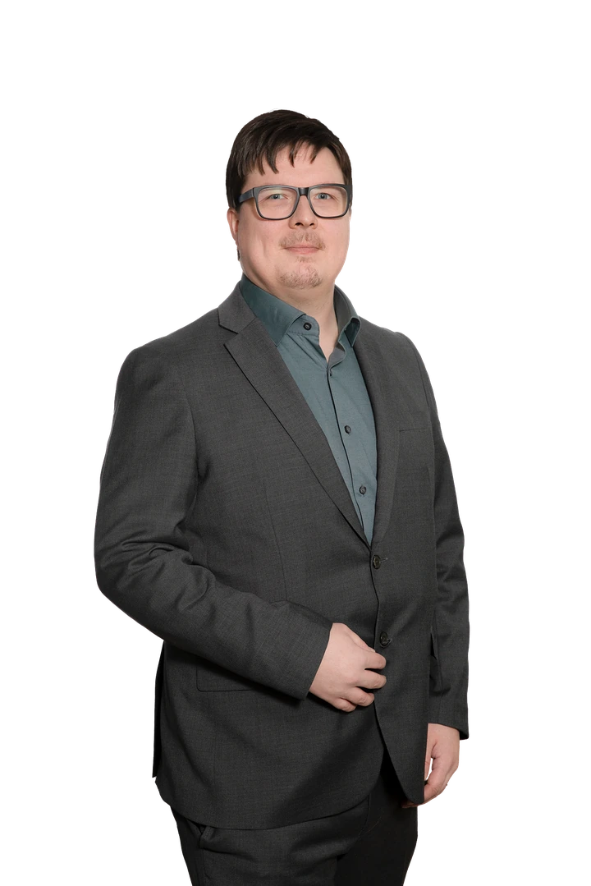
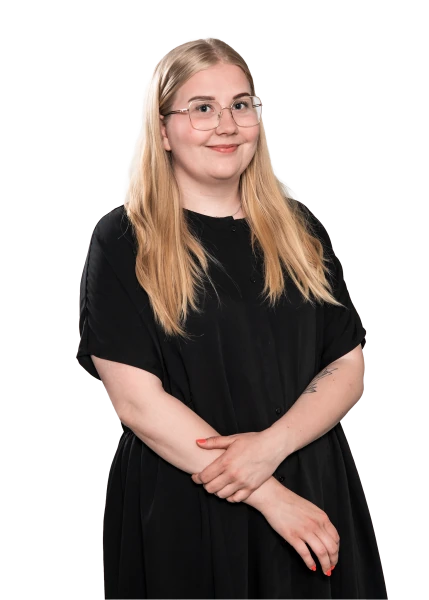

Yritysjuridiikka
Sopimukset, yrityksen oikeudelliset riskit ja riidanratkaisu. Tukea yrityksesi arkeen ja tärkeisiin päätöksiin.
Tutustu palveluunAsianajotoimisto Kontturi & Co
Oikeudellista apua yrityksen päätöksiin, riitatilanteisiin ja elämän tärkeisiin kysymyksiin.
Osaamisemme
Yrityksen sopimus, kiinteistökaupan riita tai perintöasia. Löydetään tilanteeseesi sopiva asiantuntija.
Sopimukset, yrityksen oikeudelliset riskit ja riidanratkaisu. Tukea yrityksesi arkeen ja tärkeisiin päätöksiin.
Tutustu palveluunApua asunto- ja kiinteistökaupan kysymyksiin sekä rakentamisen erimielisyyksiin.
Tutustu palveluunPerintöasiat, perinnönjako ja perheen oikeudelliset kysymykset.
Tutustu palveluunEtkö ole varma, mihin palveluun asiasi kuuluu?
Kerro tilanteestasiKontturi & Co
Tutustu ihmisiin osaamisemme takana. Jokaisesta esittelystä löydät osaamisalueet ja suorat yhteystiedot.
Etsi asiantuntija nimelläAsianajaja, laamanni, varatuomari
Asianajaja, osakas
Neuvotteleva lakimies, professori (emeritus)
Asianajaja, osakas

Asianajaja, osakas

Asianajaja, toimitusjohtaja
Asianajaja
Asianajaja
Asianajaja
Asianajaja, osakas
Lakimies
Lakimies
Lakimies (vanhempainvapaalla)
Lakimies
Lakimies

Asianajosihteeri
Asianajosihteeri
Toimistosihteeri
1–3 / 18
Lyhyt kuvaus asiasta riittää. Kerro myös, jos asiaasi liittyy määräaika.
Selvitämme yhdessä, millaista apua tarvitset ja kuka asiaasi voi hoitaa.
Käymme läpi työn sisällön ja veloituksen ennen toimeksiannosta sopimista.
Palvelemme Joensuussa, Jyväskylässä ja Lappeenrannassa. Ota yhteyttä sinulle sopivaan toimipaikkaan.
Arkisin 9–16
013 120 731Ota yhteyttäArkisin 10–16
020 730 0995Ota yhteyttäArkisin 9–16
020 730 0990Ota yhteyttäOta yhteyttä
Sinun ei tarvitse tietää etukäteen, kuka asiantuntijoistamme sopii asiaasi. Ota yhteyttä toimistoomme.
Kerro tilanteestasi